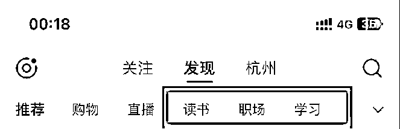
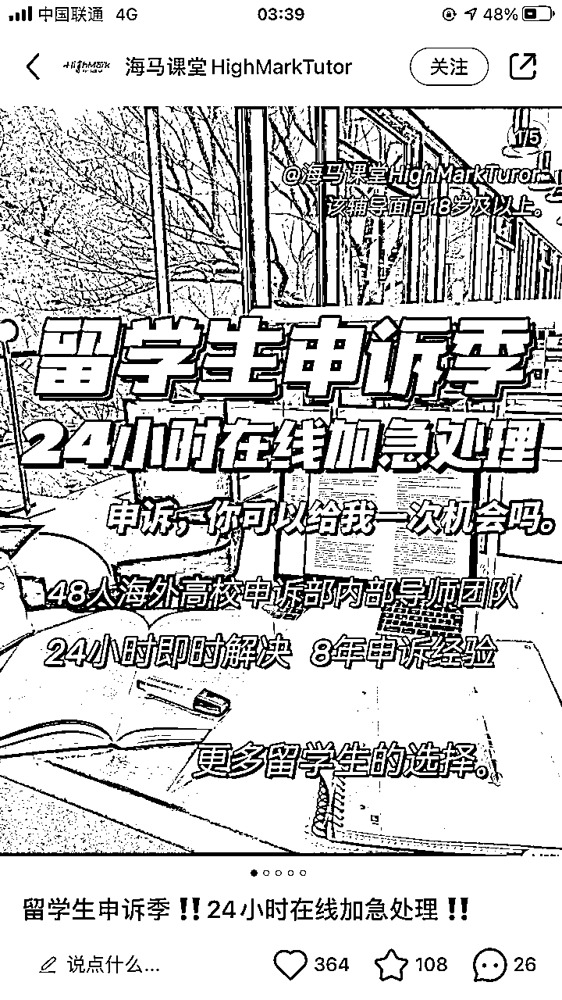

来源：https://psude5ndf7.feishu.cn/docx/VvNHd1srmo8NOSxWH45c02zSnKh
哈喽，大家好，我是生财有术第五期圈友和志愿者碧琳，一个专注小红书留学赛道的99年“杭漂”。
2022年5月，我刚毕业不久，在杭州一家留学公司做新媒体运营，0基础学做小红书。半年时间，我运营的留学账号涨粉5k+，引流3500多个留学客户到微信，团队转化成交了近两百单，我也因此升职为新媒体运营主管。
2023年9月底，我开始在小红书做新西兰留学的，到11月底，差不多2个月，就成交了12个学生，累计佣金7W+，副业收入远超主业。
留学赛道，是被低估的赛道，也是盈利最恐怖的赛道。恐怖到什么程度？我知道有个账号，只有1500个粉丝，却盈利了1500W。而且小红书留学号获客非常简单，新人只要做到简单几点，跑通变现闭环是没任何问题的。
这篇文章就以新西兰留学为例，给大家详细讲解下小红书留学号是如何做的，全文9600字，0基础手把手教学，适合新人阅读。
近年来，在大家对学历的诉求越来越高、国家一直鼓励出国留学、目前就业形势不尽人意、考研竞争激烈等多重因素的共同作用下，造成留学需求急剧上升。2022-2023 申请季，留学申请人数暴增 63% ！无论是申请人数、申请数量，均出现明大幅上涨。
联合国教科文组织数据显示，2023年，中国内地有100余万学生在境外高等教育机构就读，是全球留学人数最多的国家。中国也是美国、英国、德国、澳大利亚、新西兰、日本、意大利等国家的第一大留学生生源国。
通过小红书官方渠道发布的小红书行业月报，可以看到小红书内容的商业趋势方向。
图源：【小红书2023教育行业月报（11月）】
在成人教育类目的小红书主流业务搜索量占比可以看出，【留学】类目，属于搜索量占比前八的类目，和【演讲】、【公务员】的比重一样，是一个非常值得布局的赛道类目。
2024年，毫无疑问，小红书是最佳触达留学用户决策的利器。
小红书留学号是一个少有的，普通人就能入局的红利赛道。以我自己为例，2022年5月，我刚毕业不久，不会小红书，也不懂留学，真正的0基础做小红书留学号。半年时间，引流了三千多个留学意向客户微信。我能做到，圈友们比我厉害，肯定做得比我好。
留学顾问是一个很专业的工作，留学机构培养一个留学顾问，至少要2-3年的时间。举个例子，美国有4773所大学，留学顾问需要对很多个大学的专业设置、优势学科等情况了如指掌。这些知识，是不可能在短期内掌握的。
我们作为小红书运营，只要加到客户微信，工作就完成了，后面的工作都是由留学顾问完成的。
我们不用做成交，所以，不用掌握太多的专业知识。发小红书笔记，只要掌握基础的留学知识就够用了，不懂的地方，咨询留学顾问即可。
留学行业，只加微信，行规是中介费15-20%的佣金。除了留学申请费，还有管家陪跑、远程实习、科研等附加服务。下图是上海某家大型知名留学中介的报价表。
我尝试过做小红书旅游博主，第一周就开了两单，销售额1万+，但是因为引流被小红书禁言14天。如果想要长期做，要有旅行社的资质去进行聚光平台的行业资质认证，这个对新人来说，成本太高了！
留学投流，个体户都可以，只要经营范围带留学就行了，不需要任何资质。下图就是个体户。
网上代注册个体户，最低只要十块钱，没有任何后续费用，这个成本非常低了。
定位是商业模式中很重要的一环，定位包括人设定位、内容定位、商业定位。定位，首先从商业定位出发，也就是从可以变现的产品和服务出发，账号的打造都要围绕现有的产品和服务。
小红书留学账号因为客单价高，公域的信任感不够，基本上都是引流到私域进行成交转化的。确定变现方式是引流私域之后，整个账号的流量就要尽量吸引精准流量，不要去做泛流量。
比如，我做的是新西兰留学，新西兰留学机构那边的模式就是免收学生的中介费和押金，只拿学校那边的佣金，佣金在学生入学后一个月内拿到，所以我做的新西兰留学账号的特点就是免中介费申请。
其次，要明确自己的定位，比如我这个账号的人设是什么？
留学账号的人设大致可以分为机构官方号、学姐学长、中介测评人、留学工作室创始人、文书老师、留学顾问这几类。选定一种身份后，就可以根据人设去定自己要写的内容选题。
这里要注意，爆款笔记≠赚钱笔记！
很多人会有一个误区，我的笔记是不是点赞、收藏、转粉的数据越好，越容易变现呢？
其实，点赞、收藏、转粉都不重要，关键是评论里面有没有显性消费词，比如“怎么联系”、“滴滴”、“咨询”这一类消费需求很明显的词。
我做的新西兰留学账号，赞、藏、粉都很少，看上去就是一个很不起眼的账号，但是加微信的人很多，都是精准客户，成单率就很高。
新手博主找对标，最好找粉丝量在1万粉以下，对标账号的粉丝并不是越多越好，大博主的粉丝基数很容易让笔记冲出原始流量池。
简单的说，就是点赞量要大于粉丝量，这个标准很容易找到有潜力的博主。
做了几年的账号，可能有平台扶持或者时间红利，对新手博主起号参考性不大。
直接在小红书主页的检索框，输入该领域的关键词(比如新西兰留学等)，从【综合】、【最热】里找排名靠前的笔记点进去查看主页确认是否是可参考的账号。
在小红书二级导航里面，点击对应领域的频道，也可以找到靠前的博主。这里就属于大领域中的细分赛道，能让你找到更精准的定位。

从话题标签中找，比如"留学新西兰"，话题标签会更加细分。在话题详情页，可以看到热门笔记，笔记的作者就是要找的对标账号。
用数据工具平台找，比如蝉小红、灰豚数据、千瓜数据等等。
经常刷新西兰留学的笔记，过不了两天，小红书就给你在首页推送相关的爆款笔记了。
养号可以让我们的账号权重增加一些，不管是个人号还是企业号都需要养号。养号要遵循一机一卡一号的原则，即一个手机，只装一张手机卡，开移动数据流量，只登一个小红书号。
此外，养号还要注意：
（1）账号信息完善，头像、昵称、简介、性别，进行完善（发养号笔记昵称可以暂时不设置）；
（2）模拟3天正常用户刷小红书的习惯，每天刷一小时，进行点赞、收藏、评论，养号期间固定刷留学方面的内容；
（3）刷笔记期间可以发几篇养号笔记，利用话题帖去拉升账号权重，比如求推荐留学体验最好的国家。
养号结束后，重新进行账号装修，并且隐藏养号笔记。
建议选择真人头像或者卡通头像，一定要有辨识度
让用户一眼知道你是做什么赛道的，可以用昵称+身份+垂直定位词汇。比如梦梦学姐留学咨询
一般是写3-4行，主要内容有个人特点+专业展示+更新内容+提供服务。
主要告诉大家：你是谁？我为什么可以信任你？你有什么产品和服务，可以提供什么价值。
和自己的生活场景/工作场景/产品相关即可，也可以放一些引导联系方式的图片
相当于朋友圈，可以放一些工作或生活的图片打卡，增加信任感，或者引导私信咨询
主页排版和色彩比较统一，不杂乱，让用户有一种视觉享受。
放故事名片笔记或者高转化笔记
举例子：
这是我运营1年多的留学账号，目前八千多粉丝，这个的账号人设就是出国留学回来的梦梦学姐。
简介解析：
个人特点：主要讲留学干货申请
专业展示：深耕留学行业，服务5000+学生
更新内容：留学干货申请、留学资讯、中介测评
提供服务：提供1v1留学规划指导的留学生平台
瞬间：择校评估，箭头引导私信
封面都是以黑色系列为主，有大字报（第一张图）形式，也有留言板（第二张图）形式，整个主页的排版比较统一
两篇置顶笔记放的是高转化笔记，评论区有很多精准咨询。
素材库搭建是我们做小红书笔记的前期准备，运用到留学赛道也是这样。
分享给大家一份我自己正在用的素材库搭建模板，可以生成副本，小红书全赛道通用。我的素材库搭建主要分为对标账号、对标笔记选题库、图文/视频笔记拆解模板、笔记制作清单、标题库五部分
【对标账号】就是搜集我们所在细分赛道可以对标的同行信息
【对标笔记选题库】不仅是收集对标账号里面数据比较好的选题，还可以收集赛道内的优秀笔记选题进行对标
【图文/视频拆解模板】就是对我们收集到的对标笔记选题库里面的笔记进行一个简单的加工-拆解
【笔记制作清单】就是把之前拆解的笔记选题列入笔记制作清单，同时多找几篇笔记对标，方便进行一个重组
【标题库】就是搜集热门标题，只要刷小红书觉得不错的留学爆款标题都可以放进去，作为写标题的灵感来源
很多小红书博主在创作笔记时会陷入一个误区，容易沉迷于“自嗨”。只发自己想发的，不在意用户喜欢的。
怎么知道用户喜欢什么？爆款笔记就是用户的最爱，找对标找爆款笔记进行分析，是我们想在小红书快速起号必备的技能。通过分析爆款笔记，我找到了留学赛道爆款笔记的通用模板，照着发，你也能很快做出爆款笔记。


在评论区直接引导用户留言，然后将这条评论置顶，把转化信息放在评论区会减少放在文本框中被系统检测到营销引流动作的概率，也可以引导用户在评论区按照你的节奏留言。
从2023年4月起，小红书就狠抓导流到站外交易！

如图所示，第一次检测到，只是提醒，不影响流量。如果再次被检测，账号内容不被推荐，限流7天后恢复。第三次被检测到，限流并且全站禁言7天。第四次被检测到，限流并且全站禁言14天。
小红书对交易导流，限制很严格。不管用什么安全的方法，一旦引流多了，都是面临封号的风险。
我们目前采用的加微信方法：小红书聚光平台付费投放+私信服务组件
私信服务组件是聚光平台近30天内消耗满1000就可以使用，可以设置我们的想让客户添加的微信
这个是我们给到小伙伴的一个引流SOP的话术，这个话术存档在团队拓展的时候非常关键。团队人少还好说，但是做到一定量后，比方管十个人、二十个人的时候，sop术非常重要。
我们有很多私信回复话术，包括跟进话术是什么样子;评论区引导话术是什么样子的;关注但没有私信的用户，我们该以怎么样的形式去跟他留微信、留消息.....
投流真的很爽，不过建议前期还是先跑通闭环，再考虑企业号认证+聚光投放。
如图所示，这是我主要做投放的小红书留学企业号，从2023年3月21号开始进行投流，到2023年9月22号，刚好差不多半年时间，消耗了4万7千6百多块，总点击74万次，平均点击价格是0.06，相当于让一个有留学意向用户看到我一篇笔记的付费成本是0.06元。
加微信之后，我们是直接拉群，让留学顾问来做客服。境外留学机构会有时差，拉群后，给客户说下，等那边上班了就做咨询。客户最终成交，你在群里也很清楚。
如图：
不建议大家做留学客服，有2个原因：
1、留学需要的专业性很强，客户的问题，会非常多且杂，必须要专业的客服来回答。你作为留学的门外汉，学习成本非常高。
2、做留学客服会耗费大量的时间精力，不是我们的专长。我们专业做好引流就行了，有做客服的时间，多做几个小红书号。
首先和大家简单科普一下小红书聚光平台。
什么是小红书聚光平台呢？
简单来说，就是你通过花钱让你的笔记获得更多的推广，让更多的人看到。聚光平台就是小红书官方的付费投流平台，可以增加笔记的曝光量和收集线索（客资）
通常来说，不给钱的就是自然流，给钱的就是付费投流。
相比传统的百度头条，微信，甚至抖音这些商业化成熟的投放渠道，小红书投放成本更低，我的留学单条私信咨询成本可以投到10块左右。
目前办理一个营业执照可以认证两个企业号，一个企业号的花费成本是600，一定要办对应类目的营业执照，留学的营业执照范围一定要有自费出国留学中介服务，不然认证了大概率无法投流。
企业号的申请有手机端和电脑端两种途径，申请步骤大致相同。
推荐使用电脑端，因为界面更大，操作更方便。
点击【创作中心】-【更多服务】-【开通专业号】-【我是企业】-【选择类目】-填写和上传相关资料
登陆专业号平台，网址为:https://pro.xiaohongshu.com
小红书企业专业号认证操作手册（电脑端）
容易踩坑的点
专业号昵称和外显身份一旦确定提交了，就不能修改了，至少要等到年审开放的时候（9个月后）才能修改
最好是每次提交申请资料的时候，发邮件问一下审核人员，XX这样修改可不可以，得到审核人员确定再修改，避免浪费提交资料的机会。
小红书聚光是一号一投，每投放一个新账号，就要认证一个新的企业号。
留学账号的昵称，根据账号人设决定，外显身份认证为留学教育平台。
聚光平台开户，可以走官方渠道，也可以自己投放
官方渠道的话，通常来说只要你注册了企业号，就会电话联系你，让你开通聚光，一般是5k起充
好处是：和官方人员对接，可以得到一些政策方向的讯息，以及账号禁言或者笔记不过审后可以捞一下你
自己投放的话，首充2k就可以了，适合有投放经验的人
聚光后台网址【https://ad.xiaohongshu.com/ 】
小红书企业号审核通过之后，用短信验证码或者小红书app扫码登陆聚光后台
点击【去认证】
到推广资质认证的页面
点击【添加行业资质】

选择对应投放笔记的行业类别【一级行业】和【二级行业】
留学类目选择的就是【教育培训】和【出国留学】
等待几分钟，等推广行业资质审核通过
推广行业资质审核通过，首页就是这样的
点击【推广】，会提示首次充值未达到2000，暂无法使用广告投放功能。
如图所示，点击【充值】，输入充值金额，至少在2000及以上
如图所示，点击【支付宝支付】，可以1分钟内到账
付款成功会有提示，回到概览页面，聚光账号就开通完成了
教大家一个非常简单的【懒人计划搭建】，非常容易上手
如图所示，在【推广】界面，点击【新建广告】

对于想在小红书上面引流获取精准客户的来说，营销诉求选择【客资收集】就可以了
计划名称可以用系统自动收集的，也可以自己取一个
广告类型选择全站智投，覆盖搜索场景+信息流场景
推广标的类型，选择笔记作为推广主体
投放日期可以选择长期投放，也可以自定义一个日期区间，比如投放一周
高级设置，有一个投放时段设置，展开就是上图所示
可以设置投放的具体时间段，比如早上9点-晚上22点，投放时间自己拿捏
周一到周日，每一天的时间段都可以设置，并且可以另存为模板
一定要选择自己能够及时回复的时间段，没有及时回复很影响加微信的效率
推广目标，前期选择【私信咨询量】，后期可选择【私信开口量】
先把私信咨询成本跑稳定，私信咨询成本稳定之后可以开始搭建私信开口的计划
出价方式是系统自动出价，后面可以设置单条私信的目标成本
预算类型，我们选择【指定预算】，预算金额根据自己实际预算来定，最低预算金额100元
选择指定预算，就代表我们选择的是目标成本控制，也就是oCPC，线索类和私信营销类客户在成本可控范围内
消耗速率，选择【加速消耗】，可以带来更多流量和转化
点击【添加笔记】，来到【我的笔记】
可以选择两篇或者两篇以上的笔记
选取笔记的标准，选评论和私信数据好的笔记，而不是点赞收藏量高的笔记
评论和私信，代表的是笔记内容转化能力，一定要选内容转化能力高的笔记
更多定向，可以根据你的目标人群画像来选择
不知道怎么选择的，可以打开小红书app点击【创作中心】-【数据中心】-【粉丝数据】-【粉丝画像】
以我运营的留学账号为例子，我的粉丝84%是女性，年龄分布在18-24以及25-34，城市分布在北京、上海、广州、深圳、南京、成都、杭州、武汉这些一二线城市
那我选择定向的时候，就会选择性别女，年龄18-22、23-27
地域选择 北京、上海、重庆、江苏、浙江、武汉、广东、成都等经济发达的城市或省份
如果粉丝没有达到50个，不能看创作中心的数据也没有关系，我们会大概知道目标人群是怎么样的，
比如亲子游的目标人群，大概是年龄比较大一些的，在一二线城市工作的中产人士，就可以勾选
年龄在23-27、28-32、>32，地域在一二线城市的人口

目标成本，主要是看赛道。
我的留学账号成本基本控制在10块左右，所以我就会选择10元/次私信咨询
我们也可以先从10块开始试试，如果跑不动，再提出价，比如15块、20块
创意名称可以改为笔记的标题，这样方便后期查看数据的时候知道投的是哪篇笔记
封面优选和标题优选，都开起来
封面优选，系统会在笔记图片里面自动测试合适的封面
标题优选，筛选一下，符合笔记主题的标题，不符合笔记主题的标题就不勾选
私信组件，组件位置有互动栏胶囊和置顶评论，两个都勾选一下
置顶评论文案，可以参考同行的文案
组件按钮文案一般选择【立即咨询】，大家根据场景来使用
最终呈现效果如下图所示，可以通过主页推荐刷到或者搜索搜到，笔记右下角有白色【赞助】的字眼
笔记左下角有立即咨询的按钮，这个就是【互动栏胶囊】
评论区还有引导语 +蓝色字体 立即咨询 ，这个就是【置顶评论】
建议几类人加入：
①有过留学经验的留学生，因为留学过更了解国外的申请和生活。
②在留学机构干过一段时间的人，因为会比较熟悉留学机构的流程。
③有大学生资源的老板，手握学校资源流量，只需要搭个桥就可以把业务做起来。
④会做小红书流量，现在大大小小的留学机构太多了，很多留学机构缺的就是流量。
新人没有资源怎么入局？
你需要自己能链接到某个资源，或者有人能带你链接资源。
如果你自己就已经是留学机构的员工，那这个项目操作起来会比较简单，因为你自己是有这个资源优势的，但是如果你什么都不知道，也没有人能够带你链接这些资源的话，那么你刚开始很难谈到比较高的利润点。
可以试试在各个知识星球找一些大佬对接资源，主动链接对方。
小红书留学赛道的入门门槛不是很高，零基础也可以做，有做小红书经验的更快上手，前期可以用个人号跑通闭环，长期要做的话，还是要进行企业号认证+聚光投放的，现在小红书引流没开聚光太容易禁言了。
我们只负责引流，转化销售交给机构方就可以了，难点就是找到靠谱的留学合作方机构。
注意，一定要多方考察，找一到两家靠谱的留学合作方机构。
这涉及到两方面：
留学机构之间，拖欠款很正常的，毕竟就算正在申请中，学生不满意，还是会要求退费的。想要留学机构不拖欠，准时给你返佣金，一是要找口碑好的留学机构，二是一开始就做好约定。比如，约定佣金一周内结算，这单佣金没结算，之后的学生就先不推荐给他了。
首先，一定要确保服务和宣传的一致性。很多留学销售为了业绩，会对学生进行逼单，没签合同前很热情吹得天花乱坠的，签完合同后都不怎么搭理学生，这种情况经常出现。这种行为非常伤害用户体验，前后反差太大是最砸口碑的。
其次，文书的质量要保证，特别是要与小红书上面的宣传一致。如果文书写得很差，一个学校都没有申请上，就白白耽误了一年的时间。
最后，投诉和不满，一定要及时处理。我们是要做长期口碑生意的。
留学在小红书是一个很大的赛道，准留学生又分为初高中生和大学生，这篇文章主要针对本科 & 硕士留学的学生，留学的变现业务是非常多的。该类群体现有教育消费主要集中在留学申请服务、语言服务上；随着近些年留学申请竞争加剧、导致要求越来越高，市面上开始出现背景提升服务（科研、实习、作品集辅导、游学等）。
就是文书润色，修改，在学生写好文书的初稿，文书老师帮你进行修改，价格便宜，除了文书，其他的各项服务，都得要自己来解决，属于留学申请中的半DIY。

图源：小红书截图
包含初步的规划，择校，文书，网申，签证等各项服务，俗称「一站式服务」
图源：小红书截图
如雅思托福SAT/GMAT/日语德语等各类语言培训类
其中就以「雅思培训」为例，有大班课，小班课，1V1，保分等产品。
图源：小红书截图
很多学生在竞争名校时，往往都会需要一个亮眼的实习背景，比如读商科，没有知名券商公司和四大的实习，很难和别人PK，没有关系的学生只能付费实习，学生普遍接受的付费实习价格在2-3万，高的客单价可以在4-5万。
图源：小红书截图
很多读理工科学生，是需要有科研成果或论文，发表在一级期刊上，如果是第一作者最好，所以就衍生出了相应的教授线上课程。常见产品模式是找海内外高校教授带学生固定课题，小组做科研、发论文。
图源：小红书截图
对于艺术生而言，很难通过标准化考试(比如雅思，在校GPA等）来定义这个学生是否优秀，所以需要准备作品集来证明自己的优秀，而很多学生又不了解国外学校的老师喜欢什么风格的作品集，就需要有专业的导师来辅导学生去做出这样作品集。正常的作品集辅导均价在8-20万区间还挺常见的。
图源：小红书截图
很多学生到了海外，难免会遇到无法适应学业问题，比如因英语不经常开口练，导致课堂上内容听不懂，布置的作业不会做等问题，所以衍生出了留学生辅导的业务。
图源：小红书截图
如果学生对学校或者老师做出的一些决定（如成绩、奖学金和毕业要求等）不满意，可以提出学术上的上诉。通常需要提供详细的资料，包括证据和论据，以支持学生的诉求。
常见的留学申诉类型有挂科申诉、学术不端申诉、退学申诉等。

图源：小红书截图
就业这块也是很多留学生的诉求，主要面向在校大学生到第一份全职工作之间的用户群，通过职业辅导、实习等方式提升学生职场竞争力。
图源：小红书截图
把学生送到海外参加一些学校的参访，有些会带1-2门授课的模式。这类课程，一般是学校校方组织，当然也不乏很多机构谈下了名校资源，然后和学校官方合作，而最终也会收取相应的游学费用，比如去美国斯坦福，哈佛等名校参访2周，收取3万左右的费用。
图源：小红书截图
除这些之外，还有很多其他，如电话卡，机票，海外租房，海外买车，移民，海外房产配置等等，的确也是有利润的，暂时先不做分析啦。
留学行业鱼龙混杂，有不少做灰产的，比如留学保录取，花个几十万就可以被名校录取，实际上普通人是接触不到这样的资源的，就算有能做的留学中介也是加了几手价格的留学中介，很多时候留学保录就代表不靠谱，很大概率就是骗钱的。
对于留学合作方的筛选标准一定要严格一些，选择口碑好、有丰富留学案例、配合度高的合作机构，并且要签订好合同条款，规定好佣金的打款周期，现金流就是一家公司的生命线，把自己当做一家创业公司去运营，做好财务预算，企业号认证、聚光投流，这些都是流量成本。
我的分享到这里就结束啦，希望能对想下场做留学赛道或聚光投流的圈友提供一些帮助，如果能有很大的帮助，那就更好了，也欢迎想做这个赛道或者已经在做这个赛道的圈友来链接，一起交流呀~
这是我第一次在生财有术发文章，是一次非常重大的突破了，感谢@谢无敌和@梨云，她们是我学习小红书的老师，感谢@易寒的鼓励督促，没有你的鼓励督促就没有这篇文章，最后感谢生财有术这个平台，感谢在生财有术写小红书帖子的圈友们，感谢你们无私地分享做小红书的经验。
越分享越幸运，我是碧琳，祝大家生财有术~